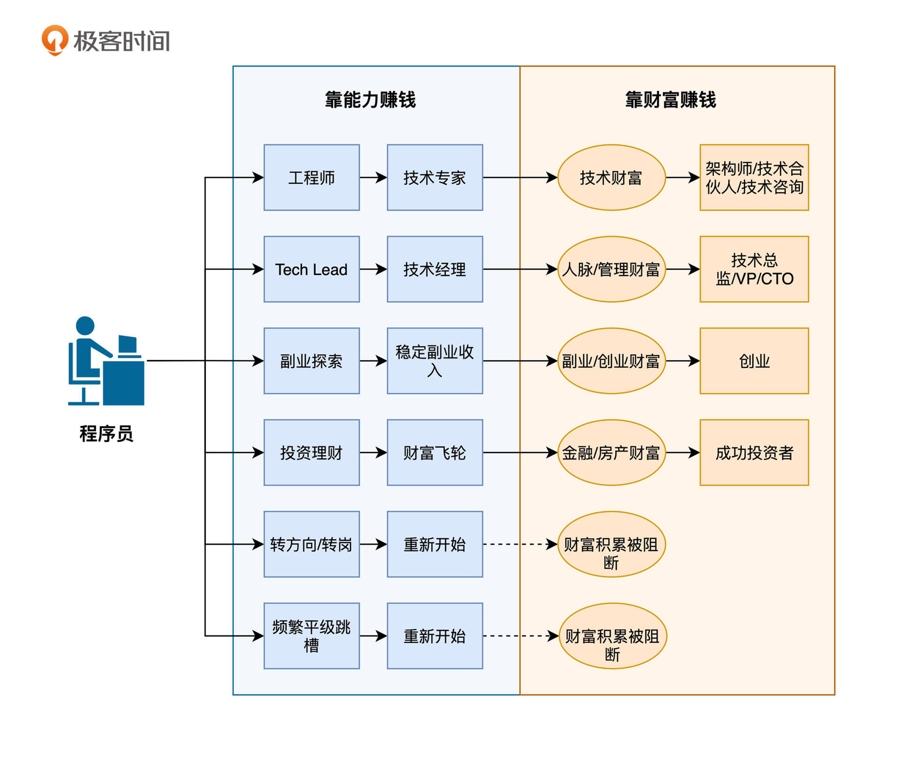
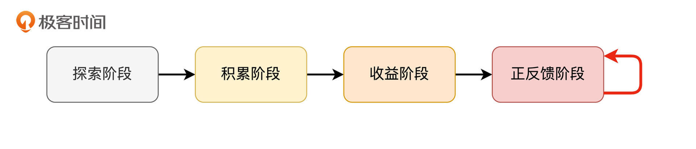
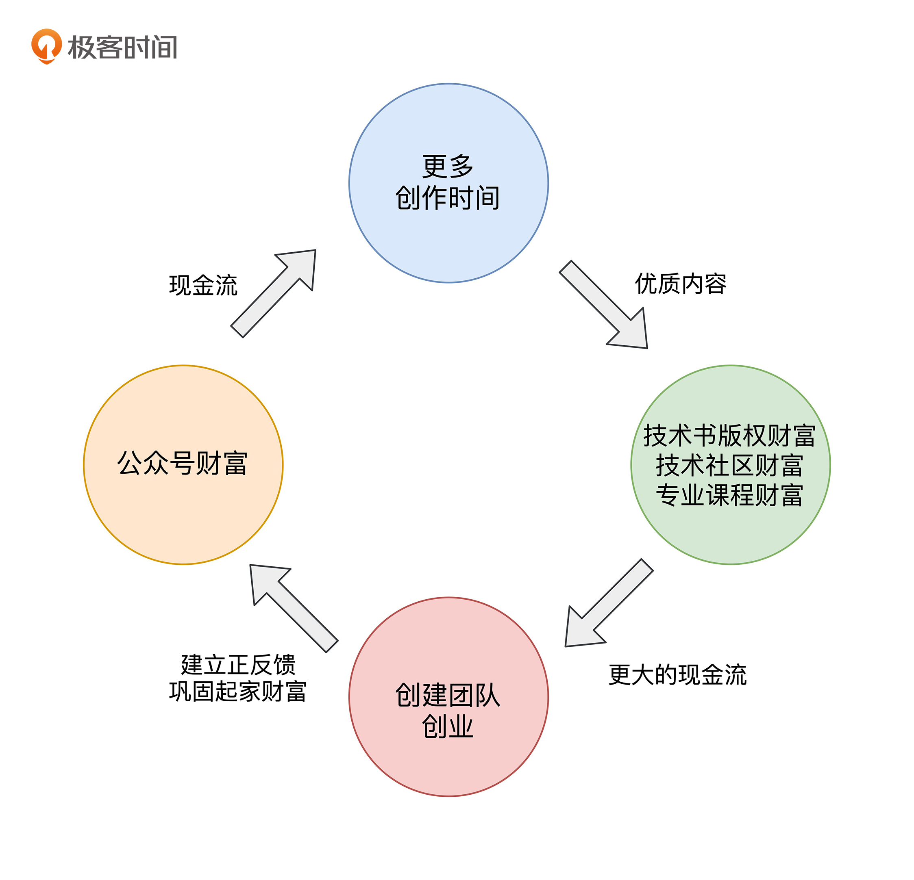
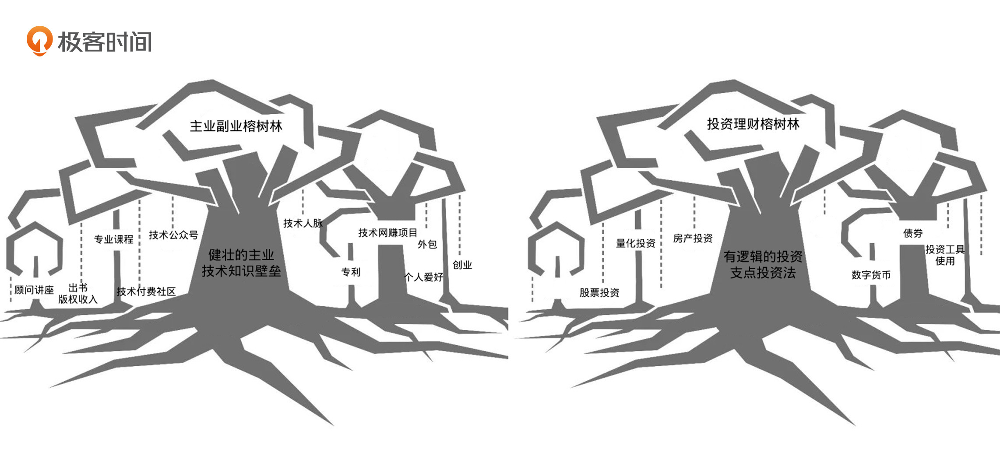

- 00 开篇词 为什么说程序员最适合学财富管理？.md.html
- 01 财富框架：建立属于你自己的财富双塔.md.html
- 02 个人发展：你自己的发展才是最大的财富源泉.md.html
- 03 理财金字塔：如何建立稳固的投资理财结构？.md.html
- 04 实战知识：有哪些收益稳健的经典资产配置组合？.md.html
- 05 支点投资法：主动投资是讲逻辑的！.md.html
- 06 不当韭菜：在财富管理的过程中摆正心态，知己知彼.md.html
- 07 职业方向：如何选择一个有前景的职业方向？.md.html
- 08 职业规划：大公司VS小公司，怎样选择更有前途？.md.html
- 09 期权股权：如何正确处理公司的期权、股权？.md.html
- 10 跳槽涨薪：如何规划一条合理的职业道路？.md.html
- 11 财富拓展：35岁失业？程序员如何拓宽财富渠道？.md.html
- 12 房产投资：如何做出理性的买房决策？.md.html
- 13 实战知识：让我们编程计算下怎么还房贷最合适.md.html
- 14 基金投资：如何让专业人士帮你赚钱？.md.html
- 15 实战知识：如何选出一只优质的基金？.md.html
- 16 股票投资：最适合散户的股票投资方法是什么？.md.html
- 17 投资闭环：如何成为越来越专业的投资者？.md.html
- 18 技术优势：程序员如何用技术超越其他投资者？.md.html
- 19 量化投资：典型的量化投资系统都包含哪些模块？.md.html
- 20 价值投资：永远不过时的中长期投资策略.md.html
- 21 趋势跟踪：怎样跟着趋势一起赚钱？.md.html
- 22 轮动策略：如何踩准市场变换的节奏？.md.html
- 23 对冲思想：这个世界上有稳赚不赔的生意吗？.md.html
- 24 多因子模型：整合不同策略，形成合力的顶层框架.md.html
- 25 机器学习：我们能用机器学习来建立投资模型吗？.md.html
- 26 量化实战：从0到1搭建起一套简单的量化投资系统（上）.md.html
- 27 量化实战：从0到1搭建起一套简单的量化投资系统（下）.md.html
- 番外一 王喆对话李腾：程序员对基金经理的灵魂十问（上）.md.html
- 番外三 有哪些能够持续学习的参考资料和相关网站？.md.html
- 番外二 王喆对话李腾：程序员对基金经理的灵魂十问（下）.md.html
- 番外四 知识总结：这门课的全部思维导图.md.html
- 答疑课堂（一） 财富框架篇、个人发展篇思考题集锦.md.html
- 答疑课堂（二） 投资实战篇、投资进阶篇思考题集锦.md.html
- 结束语 知行合一：财富管理是一生的事情.md.html
- 捐赠
11 财富拓展：35岁失业？程序员如何拓宽财富渠道？
你好，我是王喆。今天是“个人发展篇”的最后一讲，我们来聊聊程序员的“35岁危机”问题。
35岁，一个还非常年轻的年龄。但是在互联网圈，它却被妖魔化成了一个程序员职业生涯“寿终正寝”的年龄。当然，这个说法有一定言过其实的成分，但在人生的30岁到40岁之间，我们程序员确实面临着职业甚至人生转型的问题。转型成功，我们会迈向人生新的高度；转型失败，就有可能一直从事低价值的重复性劳动。
那么，作为一名程序员，我们如何成功地跨过这道坎呢？站在35岁这个人生的十字路口，我们应该怎样选择，才能让自己的个人价值不降低，个人财富不缩水呢？希望这一讲能对你有所帮助。
实现从“能力”到“财富”的转换
坦率地讲，如果我们在35岁时由于失业而出现了财富危机，那么这个危机的种子肯定早在25岁时就种下了。因为25岁到35岁这段时间，大部分人从来不会思考这个关键性的问题：如何实现从“能力”到“财富”的转换？而我希望你学完这一讲后，能成为那“一小部分人”。
那么具体来讲，这里的财富指什么，又包括哪些方面呢？其实在这门课的第一个模块中，我已经介绍过了。这里我用一张程序员的发展路径图，来帮助你更深入地理解这个概念。

从图中的左半部分我们可以看到，只要你不是富二代，靠能力完成自己的原始财富积累就是一个必须经历的过程。在财富积累的过程中，可能会出现这种情况：有些人因为频繁平级跳槽，甚至频繁更换职业方向，始终冲不破“用能力赚钱”这一圈层，因此终其一生，都只能在财富的初级赛道上打转。
但是我们看到，完成财富积累的人，从四个方向突破到了用财富赚钱的圈层。他们或是凭借技术财富，或是依靠人脉、管理财富，或是拥有创业财富，或是依赖金融房产财富，完成了从“打工人”到财富管理者的转变。
当然，让自己从多个方向突破到“靠财富赚钱”的圈层是更健康的方式。我想这样的程序员，无论如何是不会遭遇35岁危机的。
那这时你可能会问了：从这四个方向突破都好难啊，感觉能做到的都是大佬，我们普通人真的能做成吗？
那接下来我先举两个例子，你可以看看，和我们一样的普通人是怎么在35岁危机前“突围”的。
程序员小H的例子：从能力到财富的四个阶段
首先我想介绍的是程序员小H的例子。听完这个故事，你可以了解从能力到财富的积累路径。顺便说一句，因为我自己跟小H有一些零散的交集，所以我可以完全保证这个故事的真实性。
5年前，小H 30岁，他和我们大多数人一样，在某互联网公司重复着996的生活。从那时起，他就开始思考这几个问题：自己未来的路到底在哪？目前的生活是不是自己想要的？自己35岁的时候，会不会像大家说的那样，遭遇职业生涯的危机？
到了今年，也就是2021年，小H的状态是怎样的呢？他有一个40万粉丝的微信公众号，是IT领域的头部大号；他出版的图书成为了畅销书，一年卖出了5万册。而早在2019年，小H就已经辞职了，因为凭借他在行业内的影响力，广告、版权、技术社区带来的收入已经远远超过了程序员的收入。
我们刚才说了，要想度过35岁危机，就一定要实现从能力到财富的积累。对比小H 5年前和现在的状态，我们可以看到，5年前的小H只能通过996的付出来谋生，而5年后的小H已经有了3个非常有价值的、能够长期产生收益的财富项。
这三大财富项分别是：
- 媒体财富，也就是IT类头部公众号；
- 版权财富，也就是畅销书；
- 人脉财富，也就是技术社区。
那么这五年间，小H是如何实现这种从能力到财富的积累的呢？我想大致分为这样几个阶段：探索阶段、积累阶段、收益阶段、正反馈阶段。

最初的探索阶段，小H在工作之余，尝试了多种可能产生收入的方向，比如利用自己的主业技能开发独立小游戏，利用自己的业余爱好投稿网文等，但都没有收到很好的效果。从2016年开始，小H想到了一种写公众号的特别方式：利用自己的专业优势为程序员们讲解算法，并且采用新颖易懂的漫画形式。小H非常辛苦地坚持了一年时间，粉丝缓慢增长到1万人。
第一个阶段往往是最艰难的，之后希望就来了，小H进入了积累阶段。先是开始有收入了：公众号文章的阅读量是跟广告费成正比的，一个1万粉丝的垂直领域公众号，大概会有1000-3000的阅读量，于是小H第一次获得了600元的广告收入。这之后，由于看到了成功的可能，小H投入了更多的精力，积累了更多公众号的写作和运营技巧，结识了更多圈内的人脉资源，一年之内让粉丝从1万迅速增长到10万。
可以说，到这里小H已经成功完成了媒体财富的积累，后面的路就越走越顺了。凭借每个月稳定的广告收入，小H正式进入了依靠财富创收的收益阶段。这时，小H面临着一个选择：他可以用副业时间维持这个公众号，把它当作自己的一个收入来源；也可以进一步加大投入，基于这个公众号的资源开枝散叶，创造更多财富。
最终，小H选择了全职投入到内容创作的事业中，正式进入了正反馈阶段。在这个阶段，成功的关键点就在于能不能建立起“由财富产生现金流，再通过现金流积攒更多财富”的正反馈。

让我们看看，小H是怎么建立起这个正反馈的：
因为小H在公众号持续进行高质量内容输出，出版社的编辑们主动联系他出书。因为已经有了公众号提供的稳定现金流，小H可以全职投入到内容创作中。这样，他就有更多的时间把优质内容编辑成书，并经过进一步的拔高提炼，形成了深入浅出的高质量算法书。
然后，由于小H在之前的几个阶段已经积累了大量粉丝，这本书一上市就自带热度，迅速畅销。这也进一步扩大了小H的影响力，扩充了他的收入来源。再之后，相应的知识社区、付费社群也建立起来，产生了更大的现金流，帮助小H能够付费进行约稿，进行更多的内容输出。这些都使小H在技术圈的影响力持续扩大，又反过来推动了公众号的扩张。
你可以看到，这一切终于形成了一个正反馈系统，小H的公众号、技术书、知识社区都是这个系统上能够互相助推的节点。如果你自己构建的体系发展到这一步，事情已经不用你来推动了，它会自己转起来。那么毫无疑问，这时你已经拥有了一座“金矿”，还用担心35岁时的事业危机吗？
我的创业故事：创业资源向财富资源的转换
第二个例子，是我自己的创业故事。很多熟悉我的同学知道，其实我跟小H的经历有很多相似的地方：我也有自己的公众号，出过不止一本技术畅销书，还在极客时间有口碑不错的课程。但有一点，我跟小H不同：我的所有副业都是为巩固主业而服务的，并不是为了找寻一个能够替代主业的出路。但毫无疑问，如果我愿意的话，也完全可以走上小H的道路。有了这样的选择，当然不担心失业之后一无所有。
不过，你一定要清楚，我们这一讲也不是想落入一个倡导大家都去写公众号文章的俗套。我只是希望，你能从这些例子中得到一些启发，理解从能力到财富转换的种种方式。下面我想跟你聊的，是我读研究生时的一段创业历程，也希望能给你一些启发。
我是2006年进入清华计算机系读本科的，而我的创业经历从大学三年级，也就是2009年初开始，随后贯穿了整个研究生阶段，一直到我开始第一份工作。
如果你是一名80后、95前，那你一定知道2008到2010年左右的时候，移动互联网的概念有多火。那几年创业的团队不胜枚举，我跟几位同学，以及校外的一些创业朋友，也合伙创办了我们的移动互联网工作室“五点工作室”。这个工作室的业务方向主要有三个：
- 承接一些外包项目，产生切实的收益；
- 探索能够产生现金流的网赚项目；
- 业余时间孵化我们的创业项目。
最终，这三条业务线都为我的人生积累了宝贵的财富。具体来讲，主要有这几个非常切实的收益：
- 在研究生毕业前，我就通过接外包项目积累了40万的存款，这些存款帮助我及时赶上了房地产那趟车；
- 我们利用机器学习和网络爬虫的技术，搭建了一些垂直行业内容站，通过广告收入获得了稳定的现金流；
- 我们的创业项目被并购，这让我持有了少量某上市公司的股票。
除此之外，这段经历不仅增加了我很多技术实践的经验，还让我积累了大量产品、运营方面的知识，这些至今都对我的职业生涯有积极的影响。
从我的故事中，你可以分析出哪些从能力到财富的转换？我觉得至少有三点：
- 把通过技术产生收入的能力转换成房地产这个优质财富项；
- 把机器学习的专业能力转换成优质的能产生现金流的网站/App财富；
- 把创业的综合能力转换成已上市公司的股权财富。
主动思考才能把握住财富机会
我已经讲完了小H和我的故事，这时候你可能想说：小H和你的成功都不具备代表性，因为这都是“时势造英雄”。一旦过了那个时间点，红利就消失了，不管创业还是公众号，都不容易成功了。
事实果真如此吗？当然不是。机会是无时无刻都在出现的，只要主动去思考自身的优势，每个普通人都能找到适合自己的成功机会。把锅甩给“时代”，每天抱怨“内卷”和“生不逢时”，那是庸人才会做的事情，不是一个追求更好生活的普通人应该做的事情。当然，这个时代肯定存在着它的问题，但相比于改造这个时代，肯定是进行主动思考，改变自己，抓住身边的机会更务实一些。
回到正题，下面我再举几个用能力换财富的例子，希望给你一些行动方向上的启发。刚才提到的小H，和我们一样是程序员，是做算法题类的公众号成功的。其实只要结合自己的专业优势，懂得静下心来总结经验，在任何一个方向上都可以复制小H的成功。比如我熟悉的另一位同学是一名财务人员，一直在会计师事务所工作，他靠着熟练的Excel技巧出书、开课，照样获得了不菲的副业收入。
上面说的都是利用专业能力积累财富，下面我再举个有代表性的例子：我有个前同事，他利用的不是专业技能，而是自己的兴趣爱好。我这位同事业余时间喜欢摄影，他一开始通过摄影作品赚了些小钱，后来就在节假日接一些婚庆摄影的单子，逐渐转型成了职业的婚庆摄影。现在，他不仅脱离了之前不喜欢的程序员行业，而且做婚庆摄影的收入居然远超程序员的收入。这是一个典型的兴趣导向创业成功的例子。因为热爱这个行业，就有源源不断的动力支持他在这个领域做精做深。
在这些聚焦某个方向的小众市场进行投入，真的需要时运吗？我认为并不需要，需要的仅仅是你在一个方向上持续、深入钻研的能力。
“榕树关系”：主业的健壮是一切副业的基础
讲了这么多发展副业的例子，你可能想说：“我们平常上班已经够累了，还会有精力去培养副业吗？” 这其实是个非常实际的问题。要回答这个问题，我们首先就要理清楚主业和副业的关系。
对我来说，主业和副业最好的关系模式是“主业滋养副业，副业反馈主业”的“榕树关系”。
在这个关系模式里，我们把主业比作榕树的主干，把副业比作由主干生发出的气根。在开始的阶段，副业最好能够依附于你强壮的主业，从主业那里吸收营养，茁壮成长，成为你的“专业延伸财富”；而当副业长大后，它就能落地生根，反馈主业，让主业更加健壮；再进一步，如果副业发展得好，还有可能形成新的一片榕树林，成为你新的财富增长点。
接下来，我们再具体讲讲这里说的“榕树关系”。
首先，如果你的主业不够健壮，在一开始的探索阶段，副业就不可能有一个较高的起点，你就很难在众多竞争者中脱颖而出。举个例子，如果小H没有把几百道算法题吃透，他怎么可能由此构建出自己的知识体系，继而输出高质量的内容呢？我也是一样，如果上大学的时候，没有积累扎实的机器学习和编程功底，怎么能够靠这一点来创业和盈利呢？
反过来讲，在探索阶段，副业其实也会支持、促进主业的发展。比如，算法题的精进肯定有助于小H的面试、跳槽，帮他拿到更好的offer。而我对副业的投入，更是增加了我算法模型落地的能力，让我在研究生阶段就具备了大量的实践经验，这一点让我受益至今。
总的来说，由于小H和我的副业选择都和主业强相关，所以我们在副业上的时间投入，起到了类似于游戏中“双倍经验卡”的作用。一方面，探索了副业的可能性，另一方面也进一步帮助了主业的发展，这就让我们可以在财富积累道路上快速“升级”。这样对时间的高效利用，是你在没有实际收益的探索阶段把副业坚持下来的基础。所以，我强烈建议你在开始一份副业之前，问自己下面这三个问题：
- 这个副业是不是建立在我已有的技术/知识，或者坚持多年的兴趣爱好高点上的？
- 这个副业能不能让我的主业也获益？
- 这个副业我有没有可能坚持十年以上？
如果你都可以回答“是”，那就毫不犹豫地开启你的副业探索之旅吧。
小结
今天这一讲，我们讨论了如何拓展财富渠道的问题。关于这个问题，我们可以用“五个要点，一片榕树林”来总结。
首先来看五个要点：
- 要想35岁没有失业危机，就要在25岁时开始思考从“能力”到“财富”转换的问题；
- 创立成功的副业要经历“探索-积累-收益-正反馈”四个典型阶段；
- 自己的副业一定要建立在主业的知识或技能高点，或者积累多年的爱好或特长上，否则没有竞争力；
- 探索阶段是最难的，在这个阶段寻找能够让主业也受益的副业方向，是平衡时间投入最有效的手段；
- 坚持，坚持，坚持。最重要的事情说三遍，否则前面所有的分析都毫无意义。
最后，我要再提一下主业——副业的这片榕树林。主业和副业最好的关系模式是“主业滋养副业，副业反馈主业”的“榕树关系”。
讲到这里，我们第二个模块“个人发展篇”的内容就全部结束了。我想，用下面这张两片榕树林的图作为“总结和展望”，是再合适不过的了。
我们前面几讲都在聊如何规划自己的职业生涯，把我们的主业培养得更加健壮，今天讲的则是如何让我们的副业生根发芽，成长为你的专业延伸财富。希望正在听这门课的你，以及听这门课的每一位同学，都能有一个财富之林枝繁叶茂的35岁。
其实，财富的榕树林又何止一片？在我们的财富双塔中，投资理财塔的各个投资标的就能够组成另一片榕树林。从下一讲开始，我们将进入“投资实战篇”的学习，期待与你一起培育我们的投资理财榕树林！

思考题
今天的思考题，我想和你讨论两个比较有意思的现象。
第一个现象：在娱乐圈，明星火了之后，相比于只是接戏拍戏，他们更热衷于开自己的工作室、影视公司，为什么？
第二个现象：很多真正有实力的互联网高管，即使坐上了年入千万的高管位置，也还是要找机会离职创业，开办自己的公司，这又是为什么？
你能用今天的课程思路，分析这两个现象背后的原因吗？
欢迎你在留言区与我交流讨论，我们下一讲见。
© 2019 - 2023 Liangliang Lee. Powered by gin and hexo-theme-book.